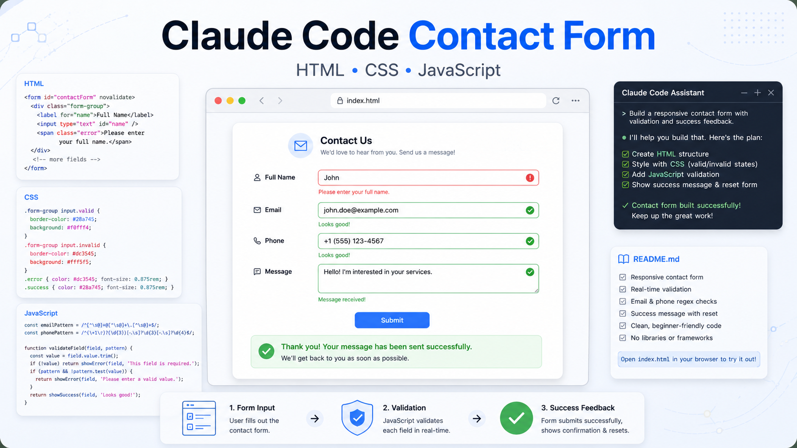

Client-Side Validation
Full name, email, phone, and message fields are validated in the browser with clear, field-specific feedback.
Project Showcase
Browser-only validation · vanilla JavaScript · automated tests

This project implements an assignment from the AI Game Changer course to "Build a Contact Form With Data Validation using Claude Code." It is a static, browser-only contact form built with plain HTML, CSS, and JavaScript. There is no backend, no bundler, and no framework.
The production app lives at the repository root. This GitHub Page is the project showcase and documentation hub: it explains what was built, how validation works, which tests cover the behavior, and where the supporting docs live.
Full name, email, phone, and message fields are validated in the browser with clear, field-specific feedback.
The phone field combines a searchable country picker with a national-number input and hidden submitted value.
Labels, `aria-describedby`, `aria-invalid`, live regions, and keyboard-friendly controls keep the form usable.
A valid submit captures the data, shows it in a green submitted-details popup, resets the form, and lets the user close the popup with the X button or outside click.
Runtime code is only static HTML, CSS, and ES modules loaded directly by the browser.
Planning docs and prompt history describe how the assignment was broken into implementation batches.
javascript/validation.js and
javascript/countries.js avoid DOM access, so they
can be tested quickly in a Node environment.
javascript/main.js and
javascript/countryPicker.js own DOM wiring, live
field feedback, submission behavior, and picker UI.
The app has layered coverage so the validation rules, DOM behavior, and browser workflow can be checked independently.
npm run test
Runs pure validation tests and jsdom integration tests.
npm run test:unit
Checks validators, country loading, search, and static docs.
npm run test:integration
Loads the form in jsdom and verifies DOM feedback behavior.
npm run test:e2e
Runs Playwright against a real browser and local static server.
The root form can be opened directly in a browser. For the country picker data fetch path and Playwright checks, use a local static server from the repository root:
npm install
npm run serve
Then open http://localhost:4173. For code review,
start with
the root app source.